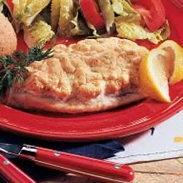

Golden Baked Whitefish
What is Golden Baked Whitefish?
This tender baked whitefish recipe is so easy to make! It's a great healthy weeknight meal, and it's ready in 30 minutes. Tender white fish is easy for even the most reluctant fish eater to enjoy - it tastes less fishy than other fish and will be your new favorite way to bake fish.
Ingredients
2 pounds whitefish fillets
1/8 teaspoon pepper
1 egg white
1/2 teaspoon salt, optional
1/4 cup mayonnaise
1/4 teaspoon dill weed
1 teaspoon grated onion
Fresh dill and lemon wedges, optional
Instructions / How to Cook
1. Preheat oven to 425°. Place fish in a greased 13-in. x 9-in. baking dish; sprinkle with pepper. Beat egg white with salt if desired until stiff peaks form. Fold in mayonnaise, dill and onion; spoon over fish. Bake, uncovered, until topping is puffed and fish flakes easily with a fork, 15-20 minutes. Garnish with dill and lemon if desired.